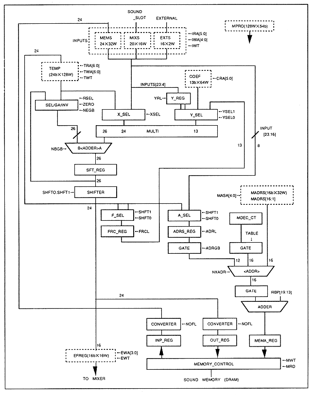

Return to previous page
｜
Return to menu
｜
Go to next page
Chapter 5 DSP Operation in SCSP
5.1 DSP configuration
Figure 5.1 shows the DSP configuration diagram.
Figure 5.1 DSP configuration diagram

Return to previous page
｜
Return to menu
｜
Go to next page